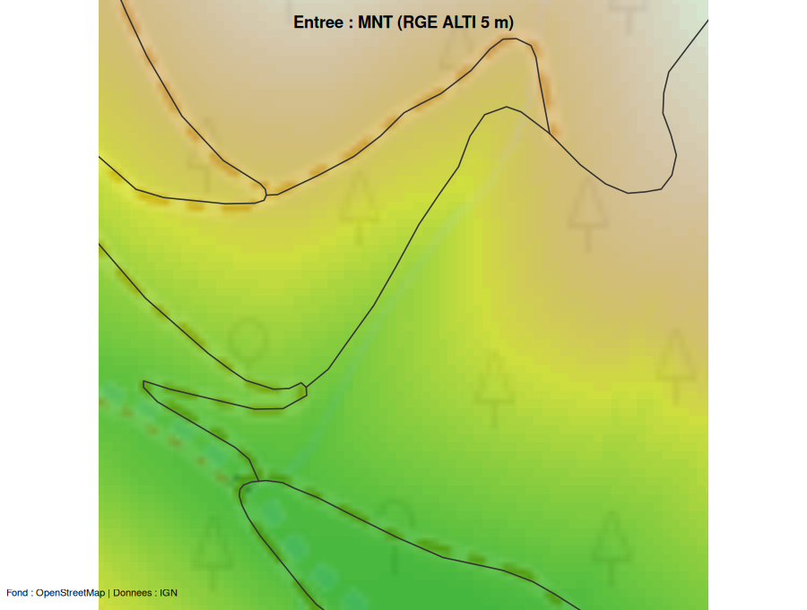
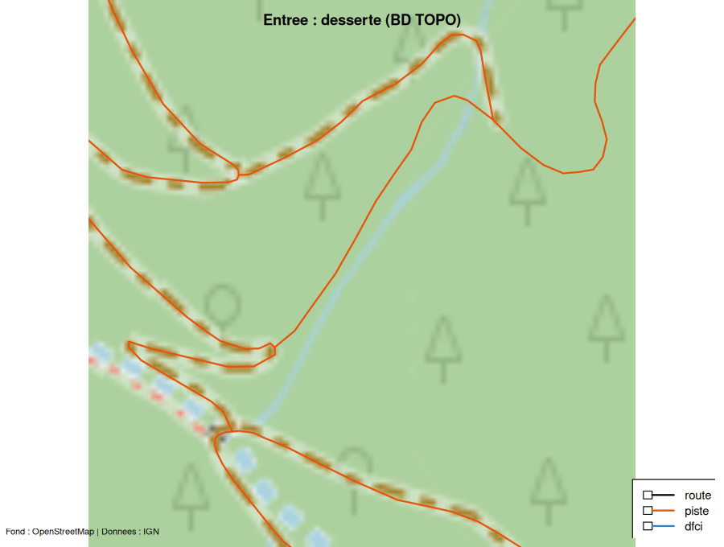
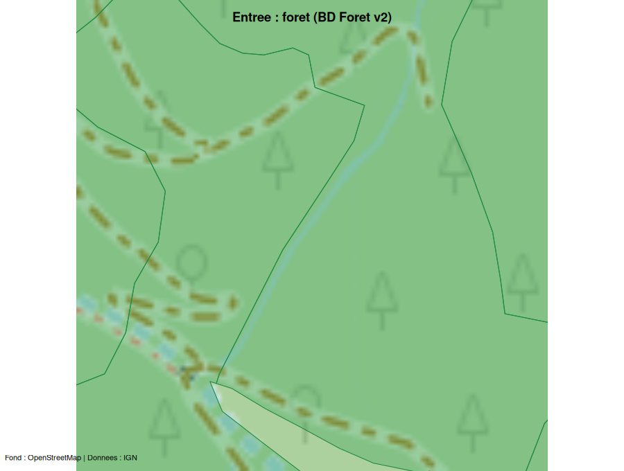
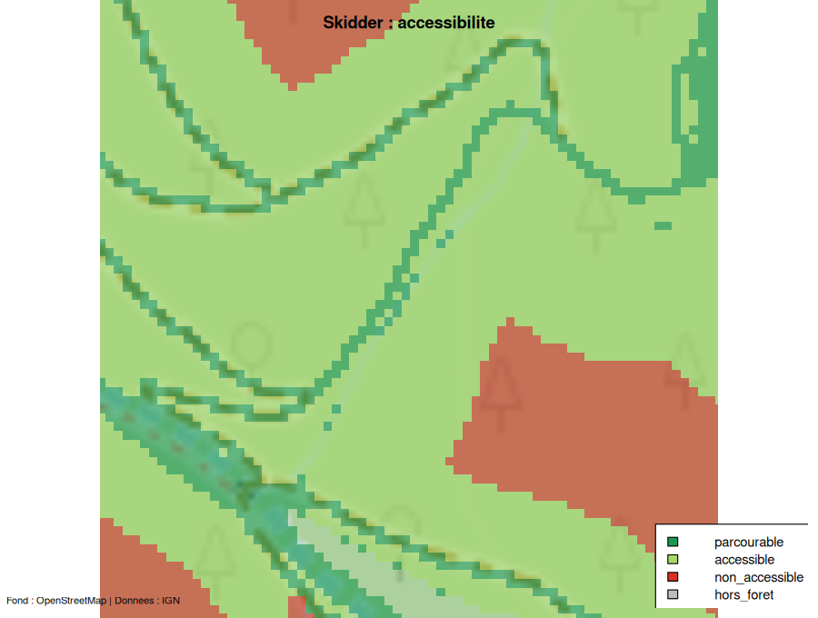
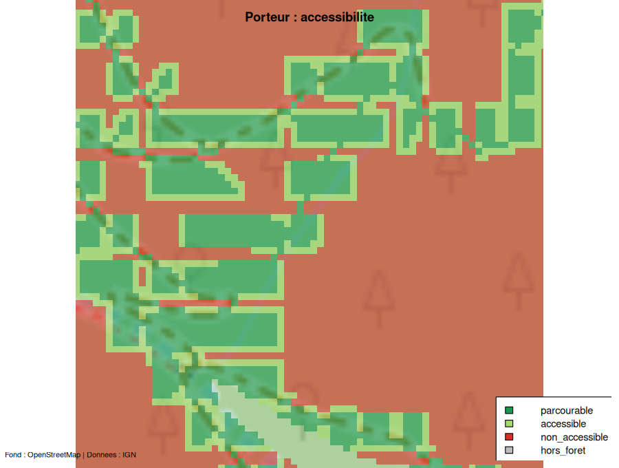
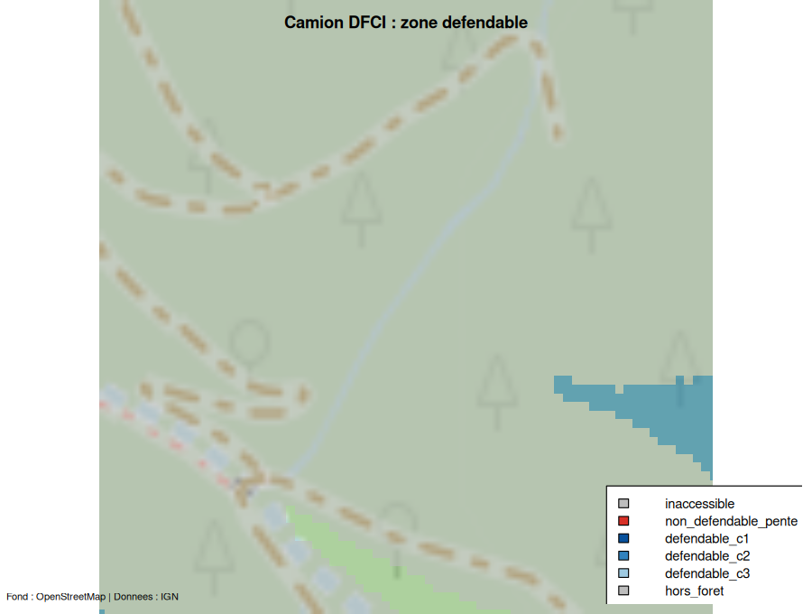
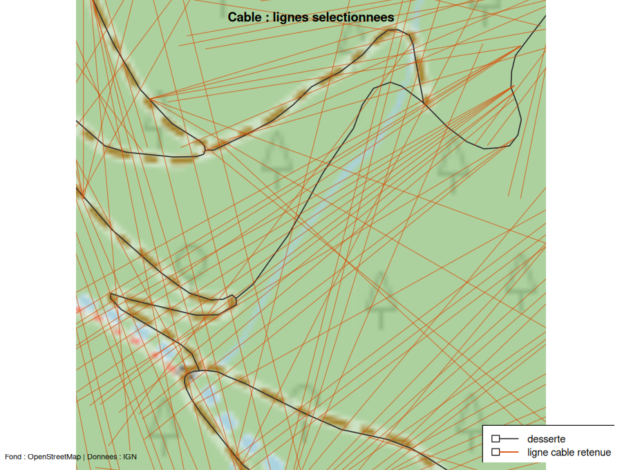
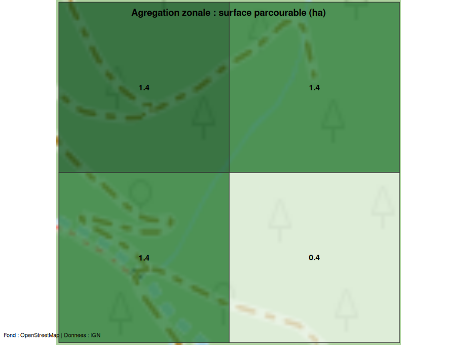

Cette page illustre le pipeline complet sur une AOI
réelle (un massif des Cévennes, data-raw/aoi.gpkg)
: les entrées sont acquises depuis l’IGN (Lot 10),
chaque moteur est exécuté, et chaque sortie est cartographiée
sur un fond OpenStreetMap.
Les cartes ci-dessous sont pré-rendues par le script
data-raw/cartes.R (acquisition IGN réelle + tuiles OSM via
maptiles) : elles sont embarquées comme images, de sorte
que la construction du site ne relance ni calcul lourd ni requête
réseau. Le rendu porte sur une fenêtre de 350 m au
centre de l’AOI — assez petite pour que le balayage
câble y termine en ~1 min (voir la note de performance en fin
de page).
Le code de bout en bout — acquisition, moteurs, cartographie — est celui-ci :
library(foretaccess)
library(maptiles)
aoi <- sf::st_read("aoi.gpkg") # emprise (EPSG:2154)
inp <- acquire_inputs(aoi, sources = c("mnt", "desserte", "foret"))
pre <- preprocess(inp$mnt, inp$desserte, inp$foret)
sk <- skidder(pre)
po <- porteur(pre)
df <- camion_dfci(pre, foretaccess_config(
dfci = list(classes_source = c("route", "piste")))) # cf. note DFCI
cab <- potentiel_cable(pre)
sel <- selectionner_lignes(cab)
# Fond OSM commun, puis superposition de chaque sortie (voir data-raw/cartes.R).
bm <- get_tiles(aoi, provider = "OpenStreetMap", crop = TRUE)Entrées acquises
Les trois couches téléchargées depuis l’IGN Géoplateforme, sur fond OSM.



Sorties raster
Accessibilité par mode d’exploitation. Les cellules hors forêt sont laissées transparentes (le fond OSM apparaît).



Sorties vecteur


Note DFCI
BD TOPO ne distingue pas la classe DFCI de la
desserte (spec 010, décision Q2). Pour cette démonstration, les pistes
et routes forestières servent de base au camion
(classes_source = c("route", "piste")) — ce qui est
réaliste en forêt.
Note de performance
Durées mesurées sur l’AOI complète (721 ha, 340 090 cellules à 5 m dont 248 658 en forêt), un cœur :
| Étage | Durée (721 ha) |
|---|---|
| Acquisition IGN (MNT + desserte + forêt) | ~10 s |
| Prétraitement | ~1 s |
| Skidder | ~34 s |
| Porteur | ~37 s |
| Camion DFCI | ~13 s |
| Agrégation zonale | <1 s |
| Sous-total hors câble | ~1 min 35 s |
| Câble (potentiel 360°/pixel) | heures à > 1 jour |
Les moteurs terrestres traitent un massif de 721 ha en ~1,5 min. Le
câble, lui, est le goulot : chaque rayon monte jusqu’à
longueur_max (750 m), et le coût par cellule explose avec
l’étendue (une fenêtre de 500 m a dépassé 48 min CPU sans terminer). À
l’échelle de l’AOI, il est impraticable en l’état —
d’où la dette assumée (portage Rust du noyau, tuilage, plafonnement de
portée). C’est pourquoi la carte câble ci-dessus est calculée sur une
petite fenêtre.